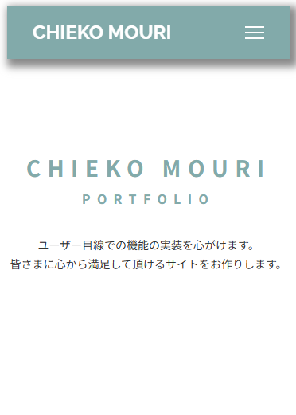
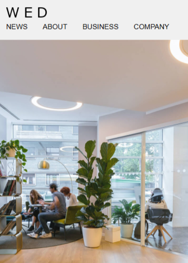
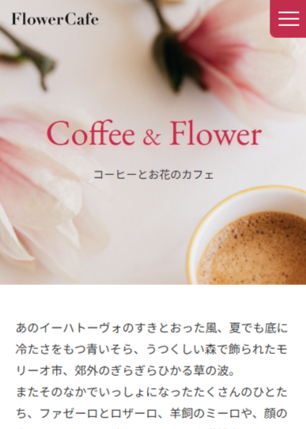
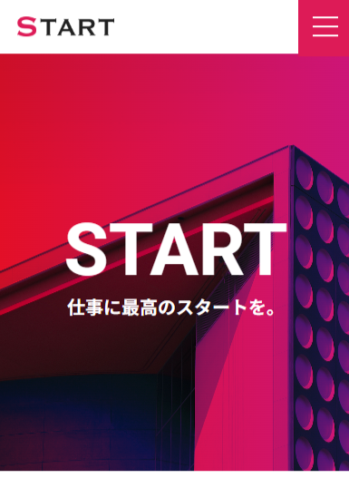
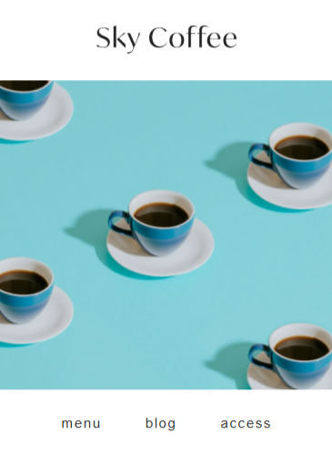

chieko mouri portfolio
ユーザー目線での機能の実装を心がけます。
皆さまに心から満足して頂けるサイトをお作りします。
works

ポートフォリオサイト
このポートフォリオです。
今まで学んできたことをまとめました。

架空のコーポレートサイト
デザインカンプ by
『Codejumb』様

架空のカフェサイト
デザインカンプ by
『未経験からWebデザイナーへ！』様

架空のコーポレートサイト
デザインカンプ by
『無料コーディング練習所』様
架空のECサイトの商品ページ
デザインカンプ by
『Codejumb』様

架空のカフェサイト
デザインカンプ by
『無料コーディング練習所』様
about
駆け出しのWebコーダーMOURIです。
私は以前より、手芸やジグソーパズルのような、作品を作る作業が好きで、完成した時の達成感に喜びを感じておりました。
IT業界に従事する身内から話を聞いているうちにIT業界に大変興味を持ち、プログラミングスクールでWeb制作を学習しました。
自身の手でホームページを作り上げた時、達成感とやりがいを感じ、コーダーへの転職の決意をしました。
今後は更なる技術を習得し、システムづくりのプロジェクトの一員となって人々の暮らしを支えるようなシステムの開発に携わりたいと思っています。
自身が携わったサービスやシステムが多くの方に利用され、サービスを通じてお客様や社会が抱える課題解決に貢献していきたいです。
大学で栄養学を学び、管理栄養士の免許を取得。ドラッグストアに就職し、医薬品、健康食品、化粧品の接客販売を行いました。その後、管理栄養士としてのスキルアップを図り、病院、老人ホーム、保育園で献立作成や栄養管理の業務に従事しました。
直近では、育児をしながら、ドラッグストア勤務時代に得た知識で取得した医薬品登録販売者の資格も活かしてスーパーマーケット併設の薬局で医薬品と健康食品の接客販売を行っておりました。
これまでの経験を活かし、今後も積極的に業務に取り組んでまいりたいと思っています。
私は作業の効率化と課題解決力に自信があります。
保育園で栄養士として勤務していた際、献立作成に追われ、園の子どもたちとの関わりが少ない事を残念に思っていました。そこで、それまであまり活用されてこなかった栄養計算ソフトを使用し、メニューや食材の入力を進めていきました。
それまではその都度作成していたメニューを、次の利用時にそのまま呼び出せるようになり、栄養計算のミスの防止とともに献立作成時間の短縮ができました。形式が整うまでは作業に時間がかかりましたが、その結果、子供たちの食事の様子を見に行く時間の確保に繋がり、それは私自身の業務の励みにもなりました。
IT業界は未経験ですが、今後も自身の強みを基に、お客さまにより良い製品の提案・提供をしていきたいと考えています。これからも日々勉強し、新しい知識を増やしてまいります。
skill
HTML5/CSS3
★★★☆☆
レスポンシブに対応いたします。
JavaScript/jQuely
★★☆☆☆
主にjQuelyを使用してアニメーションを実装します。
Sass
★★★☆☆
SCSS記法でCSSを管理します。ファイルの分割と変数・関数を用います。
Git/GitHub
★☆☆☆☆
GitHub Pagesを用いてポートフォリオサイトを公開しました。
Figma/Photoshop/Xd
★☆☆☆☆
デザインカンプからコーディングをするために必要な基本的な操作を習得しました。